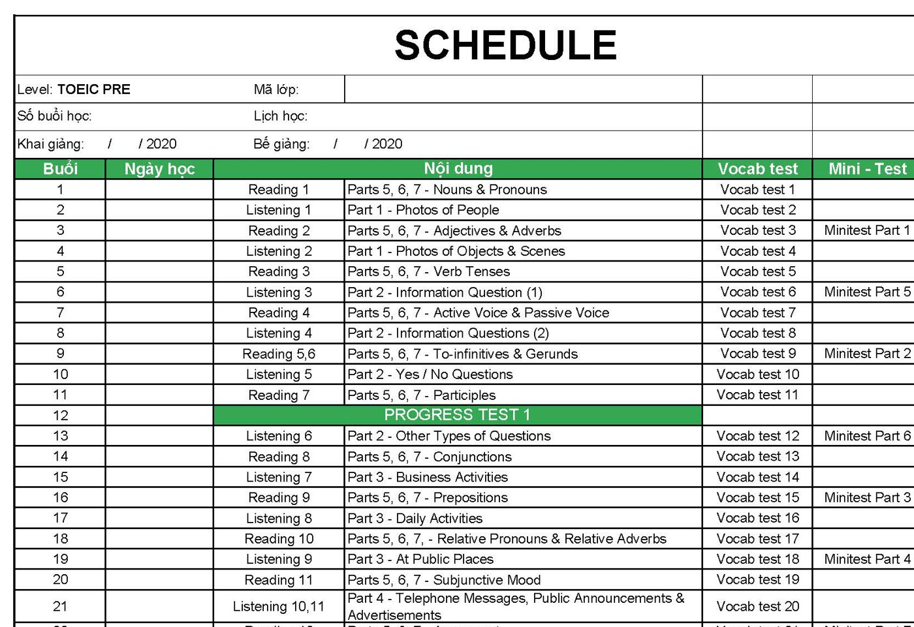

Tóm tắt kiến thức TOEIC Pre
Nhập mã lớp thầy gửi để xem các bài lớp mình đã học.
Tóm tắt từng bài Reading và Listening bằng tiếng Việt, kèm bảng từ vựng và flashcard. Nhập mã lớp để xem các bài lớp bạn đã học; bài mới sẽ tự mở vào ngày lớp học tới bài đó.
Bài tự mở theo lịch học của từng lớp (sửa danh sách lớp, ngày khai giảng, ngày nghỉ trong file docs/classes.js). Trên máy này thầy xem được mọi bài.

Part 4 – Radio Broadcasts, Speeches & Internal Announcements
Xem bàiPhát thanh, bài phát biểu, thông báo nội bộChưa mở